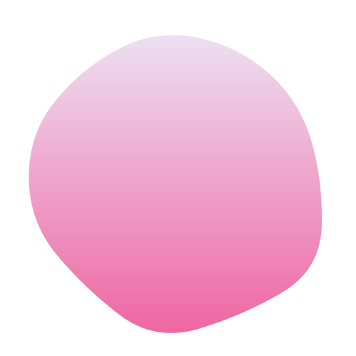
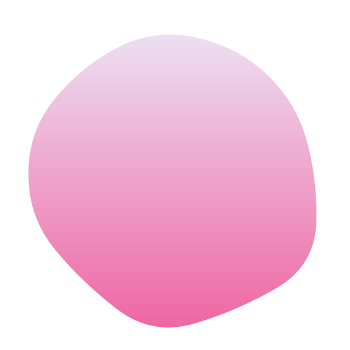

01
最初はコンポジションを作成します。今回は1280px×720pxの30fps、デュレーションは5秒で作成します。 (デュレーションはトランジションの前後のシーンの長さに合わせてお好みで変更してください)

 


01
02
最初はコンポジションを作成します。今回は1280px×720pxの30fps、デュレーションは5秒で作成します。 (デュレーションはトランジションの前後のシーンの長さに合わせてお好みで変更してください)
まず、ホワイト平面を作成しその上にトランジションで繋ぎたい映像を並べておきます。今回は「トランジションscene1」と 「TRANSITIONscene2」というテキストを使用しています。一番上のレイヤーにペンツールを使い直線を線幅120pxで長めに作っておきます。 この時アンカーポイントがコンテンツの中央に来るように来るように調整しておきましょう。

01
02
03
シェイプレイヤーの中の「コンテンツ」の横にある「追加」から「パスのトリミング」を選択します。パスのトリミングは、 モーショングラフィックスでもよく使われているので覚えておくと便利です。
まず、「パスのトリミング」の「終了点」にキーフレームを打っていきます。映像が切り替わる少し前の地点で0%、 そこから5フレームほど進めた地点で100%にします。「開始点」も同様にキーフレームを打っていきます。 映像が切り替わった少し後の地点で、0%、そこから5フレームほど進めた地点で100%にします。イージーイーズもつけておきましょう。 (fn+)F9
見た目を整えるために端を丸型にします。シェイプの中の「線」から線端をを「丸型」に変更します。
01
02
03
STEP02で作成したシェイプレイヤーを複製し、合計６つのシェイプレイヤーを作成します。 複製したシェイプをを画面全体が隠れるように並べます。先に一番上と一番下を揃えた後、シェイプを全て選択し、 「垂直方向に均等配置」をすることで簡単に揃えることができます。この時色も変えておきましょう。
シェイプを全て選択し、キーボードの「U」をおして、キーフレームを表示させます。ここではタイミングをずらしてきます。 画像のように任意のキーフレームを選びタイミングをずらしていきます。ばらつきがあるとランダム感が増してようなります。